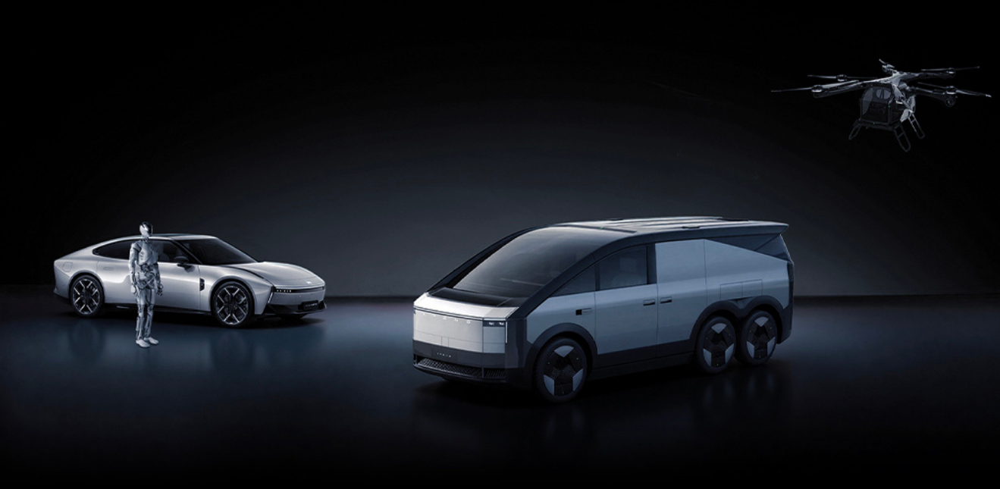

CES 2026 Robotaxis & Humanoids Roundup — Who's Ready for Real-World Robots?
CES 2026 emphasized "Physical AI" — systems that bring AI into the real world. Two big storylines dominated: commercial robotaxis and product-ready humanoid robots.
Uber / Lucid / Nuro robotaxi reveal
Uber, Lucid, and Nuro jointly unveiled a production-intent robotaxi at CES and have begun on-road testing with safety drivers, with plans to launch service later in 2026. This announcement was backed by company press releases and Reuters coverage. :contentReference[oaicite:13]{index=13}
Boston Dynamics Atlas and humanoid partners
Boston Dynamics revealed a product-ready Atlas and announced partnerships (including with Google DeepMind / Hyundai) to train humanoids with foundation models — the company says manufacturing and deployments will ramp in 2026. :contentReference[oaicite:14]{index=14}
Hyundai & others double down on robotics strategy
Hyundai outlined a "human-centered robotics" roadmap and announced production partnerships for deploying humanoids in manufacturing and other real-world settings. :contentReference[oaicite:15]{index=15}
What real-world deployment looks like
Deployments will start in constrained environments — factory floors, logistics centers, controlled urban tests — before widespread consumer deployment.
Challenges ahead
Safety, regulation, cost, and public acceptance remain the main barriers. Companies are pursuing phased rollouts and partner ecosystems to manage those risks.
Bottom line
CES 2026 signaled that robotics and autonomy are moving from demos toward limited production and real-world pilots — 2026 will be the year we separate hype from product readiness. :contentReference[oaicite:16]{index=16}